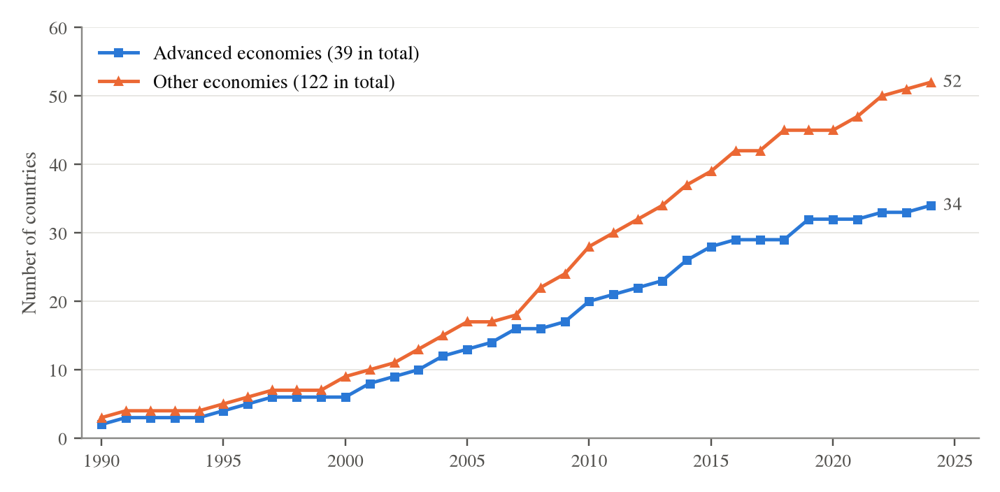
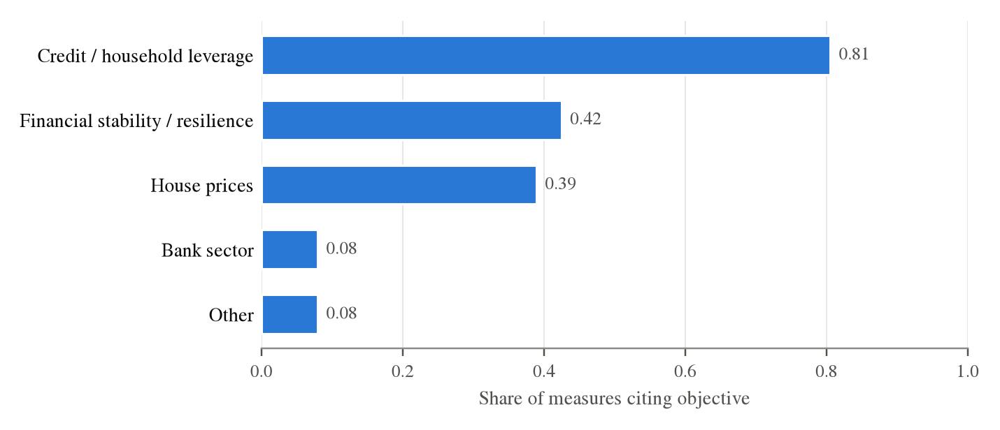

Mortgage constraints: adoption and objectives
Mortgage constraints are now a standard part of the policy toolkit, but the term covers instruments that regulate different dimensions of mortgage borrowing and have been introduced for different reasons. This section distinguishes the main policy tools, documents their spread across countries, and examines the objectives policymakers attach to them and the economic rationales behind those objectives. We describe the statutory design of these rules only briefly. Who is exposed to them, how lenders implement them, and which households end up constrained are examined in Section 4.
2.1Policy tools
Borrower-based mortgage constraints regulate either how much a household may borrow at origination or how quickly the resulting debt must be repaid. The most common origination constraints link borrowing to the value of the property or to household income, either directly or through required debt service.
Loan-to-value (LTV) limits cap the mortgage relative to the value of the property, requiring the borrower to finance the remaining share with equity. For a given property value, a lower maximum LTV implies a larger down payment. Because permitted borrowing is tied to the property value, changes in house prices feed directly into borrowing capacity. A collateral constraint of this form, in the tradition of Kiyotaki and Moore (1997), is also a common representation of borrowing frictions in quantitative housing models (e.g., Favilukis et al. 2017; Berger et al. 2018; Kaplan et al. 2020).
Income-based limits instead tie borrowing to household income. Loan-to-income (LTI) limits cap mortgage debt relative to income, and debt-to-income (DTI) limits cap total household debt. Unlike an LTV limit, these constraints are not mechanically relaxed for homeowners when house prices rise (Greenwald 2026; Grodecka 2020). Debt-service-to-income (DSTI) limits cap required debt payments relative to income, so their tightness also depends on interest rates, maturity, and the repayment schedule. Most mortgage defaults are triggered by cash-flow shocks rather than by negative equity alone (Ganong and Noel 2023), so DSTI limits act on a margin that is directly relevant for repayment risk.1
Amortization requirements and maturity limits operate differently: they do not cap the mortgage at origination but determine how quickly it must be repaid. They raise required payments and reduce short-run cash-flow flexibility while accelerating the accumulation of housing equity. In practice, they may also reduce borrowing at origination, because households adjust loan size to affect the repayment path relative to, for instance, their income.
Countries frequently combine several of these instruments, so the constraint that binds for a given household can change with house prices, income, and interest rates. Regulations also differ in how strictly the limits apply. Some are hard caps on individual loans, while others allow lenders to exceed the limit for a share of new lending, either through a flexibility quota (Kinghan and McCann 2019) or by capping the share of high-ratio loans in a lender’s new lending (Peydró et al. 2024), as in the UK limit on mortgages at or above 4.5 times income. Some regimes also treat first-time buyers, refinancing, or new construction differently. These features determine how far the limit written in regulation translates into the limit households face, a wedge we return to in Section 4.2.
2.2Adoption and scope
Mortgage constraints have spread widely since the early 1990s. Panel (a) of Figure 1 shows the cumulative number of countries in the Integrated Macroprudential Policy (iMaPP) database (Alam et al. 2019) that have used an LTV or income-based limit. Amortization requirements and maturity limits are not included. Of the 39 advanced economies in the sample, 34 (87 percent) have used an LTV or income-based limit at some point. Adoption is less universal but still substantial among emerging market and developing economies: 52 of 122 countries (43 percent) have used at least one such measure. Collateral-based limits such as LTV caps are somewhat more common than income-based limits in both groups.


Notes. Panel (a): data from the Integrated Macroprudential Policy (iMaPP) database (Alam et al. 2019). A country is counted from the first year in which it has an LTV or income-based limit in force; the sample covers 39 advanced economies and 122 emerging market and developing economies. Panel (b): share of the 113 policy actions in the MaPPED sample (Budnik and Kleibl 2018) citing an objective in each of the four broad categories or the residual. Objectives are multi-select and unranked, so shares do not sum to 100 percent. See Appendix A for the sample definition and mapping.
Some countries, such as Hong Kong and Korea, introduced LTV or income-based limits before the global financial crisis. Adoption accelerated after 2008, however. By then, the expansion of mortgage credit supply was widely understood to have fueled the boom in house prices and household leverage and to have deepened the ensuing bust (Mian and Sufi 2009, 2011; Favara and Imbs 2015; Favilukis et al. 2017), although the relative importance of credit supply and house-price beliefs remains debated (Kaplan et al. 2020). The post-crisis wave established mortgage constraints as a central macroprudential instrument (Moretti and Riva 2025).
2.3Objectives and rationales
Mortgage constraints are much used, but what exactly do they set out to achieve? To systematically characterize this, we use the objectives that national authorities report in the ECB’s Macroprudential Policies Evaluation Database (MaPPED), which covers 113 macroprudential actions on residential lending standards in 18 European countries. We group the reported objectives into four categories (credit and household leverage, financial stability, bank sector, and house prices) and a residual for other objectives. Authorities can report several objectives for the same measure, so the shares do not sum to 100 percent. Appendix A describes the data.
Panel (b) of Figure 1 shows that credit and household leverage are the most frequently cited concerns: 81 percent of measures report at least one credit-related objective, and sectoral credit growth alone is cited by 70 percent.2 Financial-stability objectives, including resilience, appear in 42 percent of measures and house-price developments in 39 percent. Objectives referring specifically to the banking sector appear in only 8 percent. Authorities thus cite credit growth, an intermediate target, nearly twice as often as financial stability, the ultimate objective that motivates macroprudential policy.
The academic literature offers at least two broad externality-based rationales for macroprudential policy, and both appear in the motivations policymakers provide. The first is a pecuniary externality. Individual borrowers do not internalize that higher leverage can amplify forced asset sales following an adverse shock. The resulting decline in asset prices reduces other borrowers’ collateral values and tightens their borrowing constraints (Lorenzoni 2008; Bianchi 2011; Dávila and Korinek 2018; Jeanne and Korinek 2019; He and Kondor 2016). The second is an aggregate demand externality. When monetary policy is constrained, borrowers do not internalize the effect of their borrowing decisions on aggregate demand (Farhi and Werning 2016), and deleveraging by constrained borrowers can push the economy into a liquidity trap (Korinek and Simsek 2016). Swedish and UK authorities, for instance, appeal to this rationale when they link high household debt to sharp consumption cuts after macroeconomic shocks. Both rationales correspond to what the framework in Section 3 calls the external cost of financial vulnerability. Section 6 reviews the evidence on the size of that cost.
A third rationale, consumer protection, does not rest on an externality. The US Ability-to-Repay/Qualified Mortgage rule of 2014, the rule studied by DeFusco et al. (2020), primarily intended to strengthen mortgage underwriting practices rather than restraining credit growth or reducing systemic risk. Such a rule targets failures in private borrowing and lending decisions themselves. In our framework, this changes the interpretation of the direct effect: if households or lenders misjudge repayment risk, part of the reduction in borrowing could represent a private gain rather than a cost.
Given the prominence of credit and leverage among the stated objectives, much of the empirical literature naturally asks whether mortgage constraints reduce household credit growth, and our review starts there as well. But lower credit is valued because it is expected to reduce financial vulnerability, and restricting borrowing is unlikely to be costless for the households it constrains or for the markets they trade in. The next section therefore develops a framework for identifying the relevant economic margins for a more holistic overview of the effects of mortgage constraints.
Notes
Terminology differs across jurisdictions and databases. In the United States, “DTI” refers to the ratio of monthly debt payments to income, which is a DSTI limit in our terminology. The rule studied by DeFusco et al. (2020) is therefore a DSTI limit.↩︎
Because MaPPED covers only European countries, panel (b) speaks to a narrower set of countries than panel (a).↩︎